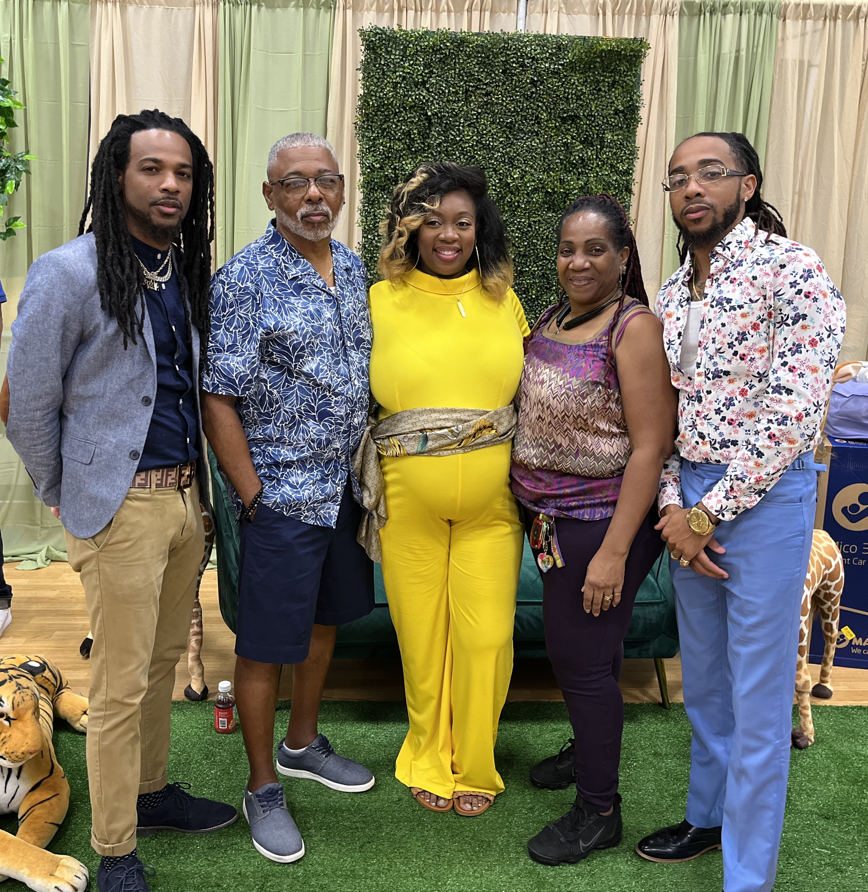

My hobbies & interest change like the seasons, but I have a few core hobbies that have not faded for years. some of them include:
- Riding Motorcycles
-
I've always had a interest in motorcycles watching my father as I grew up. I bought my first bike when I was 21 and been riding every since.

-
- Fishing
-
I started fishing about 4 months ago and became addicted. I'm pescatarian so seafood is a big part of my diet.

-
- Going to the Beach
-
The water is my happy place. My favorite time to go is at night.
-
- Reading
-
I am a knowledge sponge. I enjoy reading law, finance, and strategy books. A book that I feel is interesting is The 48 Laws of Power.
-
- Commercial Drones || Aerial Photography & Cinematography
-
I've always had an interest in the RC World. I use to build the gas and electric rc cars when I was younger. Drones peaked my interest around 2014 and I found that it was an expensive hobby. I explored the commercial side of the UAV industry, got licensed and started doing freelance commercial work that has included coding.

-
- Music
-
I played multiple instruments growing up so music has naturally stuck to me. I've had some professional experience in radio & broadcasting as an On-Air Dj. I still actively DJ for private events such as weddings, graduations, etc.
Favorite Artist - Andre 3000 and Lil Wayne
-
- Coding
-
Started during Myspace days! IYKYK!
-
- Finance
Finance is one of the keys that control quality of life. I'm extremely interested in quality of life and generational wealth.
Personal Life
I'm a easy going individual overall. I'm laid back and chill and also a homebody. I'm a big family person. Me and my immediate family are very close although we are spread out location wise. Something about me that you probably wouldn't guess is that I used to work in a funeral home.
- Im 31 years young
- I am the youngest of 3 siblings
- I have two kids ages 2 and 12
- I was born in Germany
Future Goals & Aspirations
I would really like to retire by the age of 40 and travel the world with my kids. My plan is to continue to invest and create multiple streams of income with platforms such as Turo & AirBnB. In due time, I feel like the knowledge, skills, and experience gained from Quotum Tech paired with the other streams of income will help me build my real estate portfolio ultimately allowing me to reach my retirement goal.
- Become a Successful Developer
- Invest in Real Estate
- Build Generational Wealth